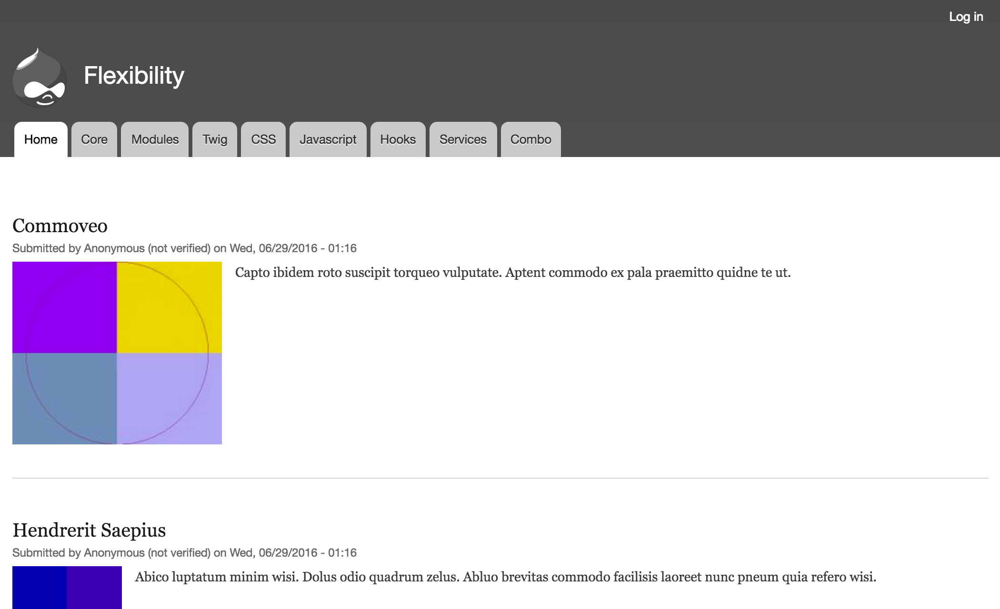
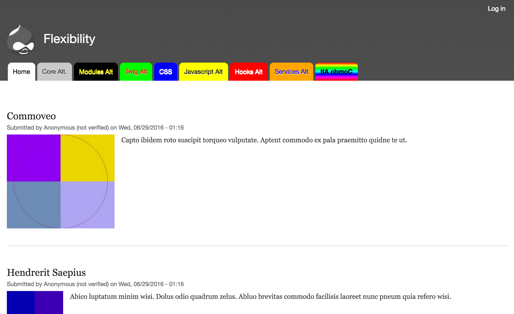
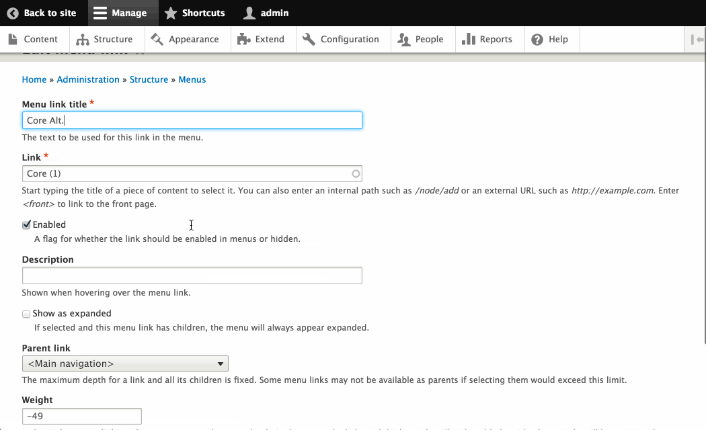
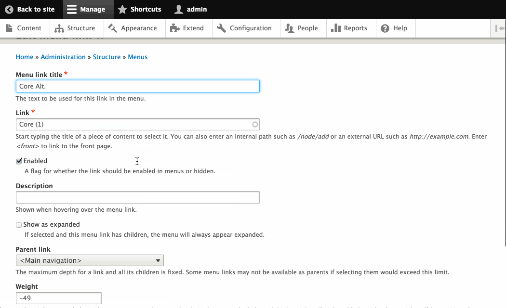
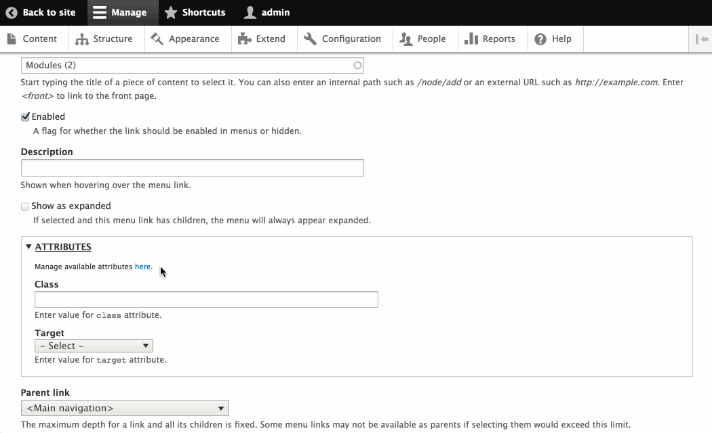
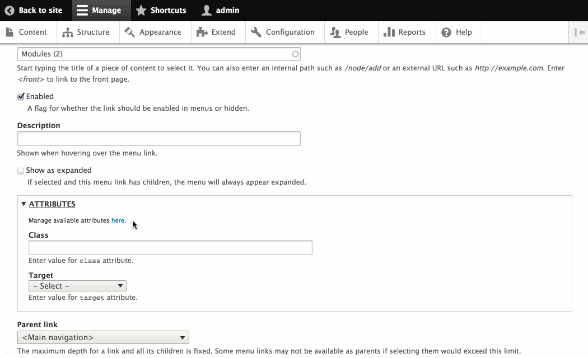
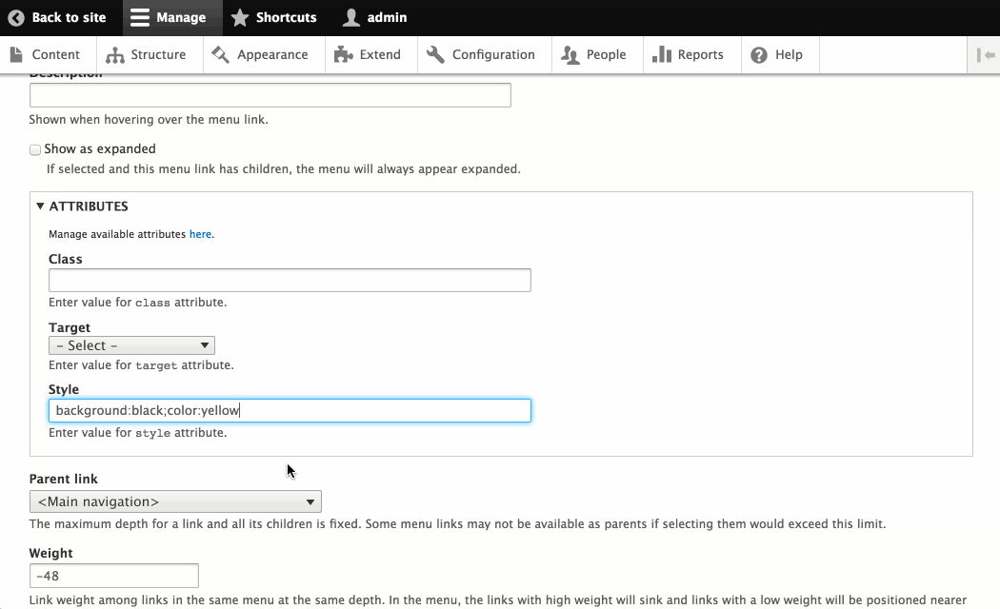
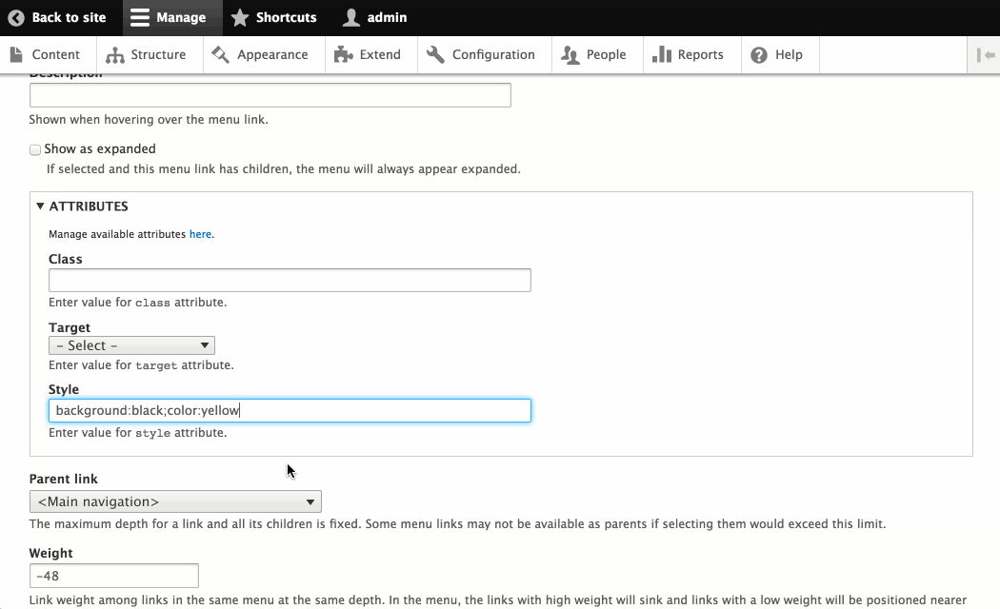
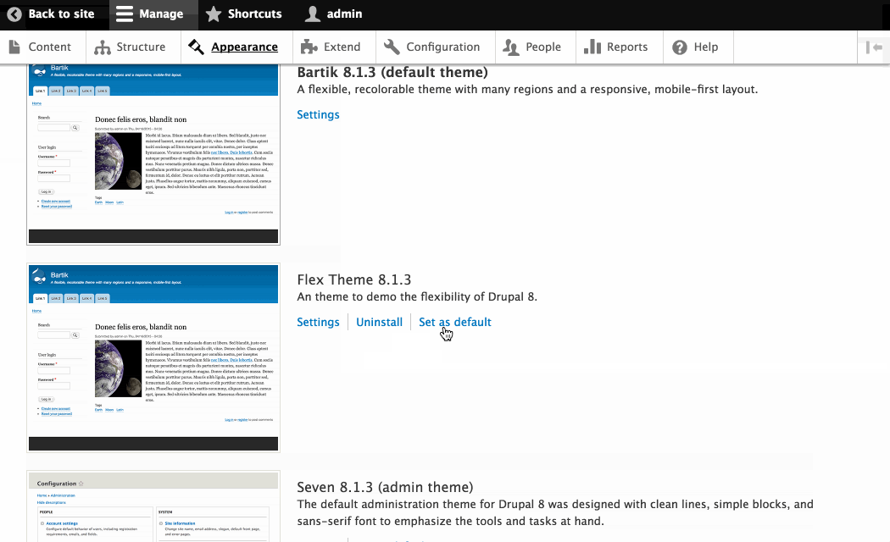
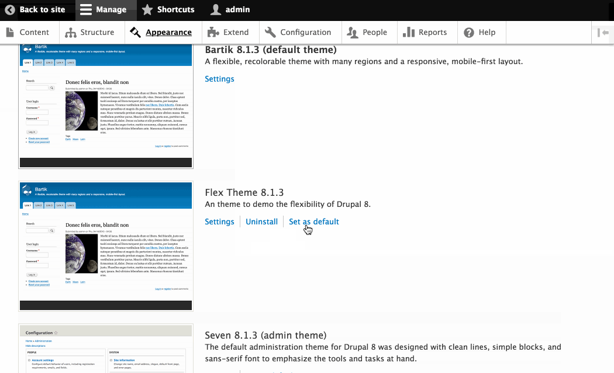

The Flexibility of Drupal 8
NYCCamp 2016
Mike Miles
Genuine (wearegenuine.com)
All the internet places: mikemiles86
What is Flexibility?
"Expansion Flexibility - The capability of building a system, and expanding it as needed, easily and modularly."
- Jim Browne, 1984
What makes Drupal Flexible?
- Decoupled nature
- Modular design
- Open source
Three Areas of Manipulation
- The Interface
- Display Layer
- Data/System Layer
Why this is important
- Can make Drupal do what you want
- No "right way", just the "right for me" way
- Adjust for skillsets, time and budget
The Demo
- Drupal 8.1.3
- Standard Install Profile
The Before
The Before
A plain Drupal 8 install with menu menu links before manipulation.
The After
The After
Drupal 8 main menu after demostrating manipulation methods.
 

Use Drupal core to edit a main menu link. Limited to changing the title and the destination.
The first menu link has been altered using only Drupal core.
Using Drupal core
- Requires little techincal knowledge.
- Allows for "quick" changes.
- Very limited changes.

Look for modules on Drupal.org to see if there is one that meets your needs. Found the Menu Links Attributes module for Drupal 8.
Many ways to download and enable modules. Will use the core interface to enable the Menu Links Attributes module after downloading.
 

When editing a menu link, now have more attributes available to set.

Menu Links Attributes module requires some technial (YAML) knowledge to customize
attributes:
class:
label: ''
description: ''
target:
label: ''
description: ''
options:
_blank: 'New window (_blank)'
_self: 'Same window (_self)'
style:
label: ''
description: ''
_core:
default_config_hash: 9nRDOclwSlz2Os9mJXM1LXNbV2q-bADV0zipiWPXymk
Add a new configurable 'style' attribute (lines 11-13) to the YAML
 

After saving configuration, now able to add inline style to menu links
Using a contrib module allowed for altering the style of the "Modules" main menu link.
Using a contrib module
- Extended core abilities
- Required some technical knowledge
- Limited based on what module offers

Can use Twig debug to learn which template the main menu uses.
<!-- THEME DEBUG -->
<!-- END OUTPUT from 'core/themes/classy/templates/navigation/menu.html.twig'
Twig debug tells the available template names to override current template.

Create a custom theme (flex_theme), to override the menu--main.html.twig template.
{# ... #}
{% if items %}
{# ... #}
{% for item in items %}
{# ... #}
<li{{ item.attributes.addClass(classes) }}>
{% if item.title == 'Twig' %}
{% set style = 'background:#0F0;color:#F00' %}
{{ link(item.title ~ ' Alt', item.url, { 'style': style }) }}
{% else %}
{{ link(item.title, item.url) }}
{% endif %}
{# ... #}
</li>
{% endfor %}
</ul>
{% endif %}
flex_theme/templates/menu--main.html.twigAdd logic to twig template (lines 7-12) to check title of current link and alter the styling.
 

Enabling the new theme as default so that Drupal will use the custom twig template for output.
Result of using a custom theme with template to alter "Twig" menu link.
Using a template
- Almost everything in Drupal can be altered using a template
- Make changes by altering HTML/Twig
- Requires little Drupal knowledge (creating a theme)

Will add some custom styling to existing custom theme (flex_theme)
.menu--main .menu li:nth-child(4) a {
background: #0000FF;
color: #FFF;
}
themes/flex_theme/css/menu_alter.css Use custom CSS to target the 4th item in the main menu
menu-alter:
version: VERSION
css:
component:
css/menu_alter.css: {}
themes/flex_theme/flex_theme.libraries.ymlCustom CSS and JavaScript need to be added to a custom library. Custom libraries are defined in a *.libraries.yml file.
name: Flex Theme
type: theme
description: An theme to demo the flexibility of Drupal 8.
package: Core
version: VERSION
core: 8.x
base theme: bartik
libraries:
- flex_theme/menu-alter
themes/flex_theme/flex_theme.info.ymlAdd custom library as a dependency of the theme in the *.info.yml file. Drupal will include this library on any page where this theme is used.
The "CSS" menu link has been altered using custom CSS. Only able to alter the display of menu item.
Using custom CSS
- Target specific page items
- Can only effect display
- Add using a theme or module.

Will add new JavaScript and CSS to custom theme to alter data using custom JavaScript.
(function ($, Drupal) {
"use strict";
Drupal.behaviors.flexThemeMenuAlterMain = {
attach: function (context) {
$('.menu--main ul.menu li a').each(function(){
if ($(this).attr('href') == '/node/5') {
$(this).addClass('yellow-menu');
$(this).attr('style', 'color: #000;');
$(this).attr('target', '_blank');
$(this).text($(this).text() + Drupal.t(' Alt'));
}
});
}
}
})(jQuery, Drupal);
themes/flex_theme/js/menu_alter_main.js Write a Drupal Behaviour that will trigger whenever the DOM loads. Target a specific menu item to change value and add a custom class.
.yellow-menu {
background: #FFFF00;
}
themes/flex_theme/css/menu_alter_main.css Add some basic CSS for to a custom class name.
menu-alter:
version: VERSION
css:
component:
css/menu_alter.css: {}
menu-alter-main:
version: VERSION
css:
component:
css/menu_alter_main.css: {}
js:
js/menu_alter_main.js: {}
dependencies:
- core/jquery
- core/jquery.once
- core/drupal
themes/flex_theme/flex_theme.libraries.yml Add a second library to libraries.yml file. A Liibrary can define both CSS and JS files to include, as well as, any dependencies on other libraries.
{{ attach_library('flex_theme/menu-alter-main') }}
{# ... #}
{% if items %}
{# ... #}
{% for item in items %}
{# ... #}
<li{{ item.attributes.addClass(classes) }}>
{% if item.title == 'Twig' %}
{% set style = 'background:#0F0;color:#F00' %}
{{ link(item.title ~ ' Alt', item.url, { 'style': style }) }}
{% else %}
{{ link(item.title, item.url) }}
{% endif %}
{# ... #}
themes/flex_theme/templates/menu--main.html.twig Libraries can be attached from within a template files, by using the twig function 'attach_library'. Attaching new library only when the template menu--main.html.twig is included on page.
The "JavaScript" menu item is altered after custom JavaScript triggers, changing values and assigning a new class name for syling.
Using custom JavaScript
- Can make changes based on actions
- Control inclusion with a library (Custom theme or Module)
- Browser dependent

Can use Twig debug to learn naming convention for hooks
<!-- THEME DEBUG -->
<!-- END OUTPUT from 'themes/flex_theme/templates/menu--main.html.twig'
Twig debug information informs that theme hooks should contain 'menu__main' (line 2)

Will create a custom module (flex_module) to implement hooks.
// Implements hook_preprocess_HOOK().
function flex_module_preprocess_menu__main(&$variables) {
// Loop through all menu tabs.
foreach ($variables['items'] as &$menu_tab) {
// Current tab pointing to node/6 ?
if ($menu_tab['url']->toString() == '/node/6') {
// Alter Title
$menu_tab['title'] .= ' Alt';
// Existing attributes?
$attributes = $menu_tab['url']->getOption('attributes');
// Add custom styling.
$attributes['style'] .= 'color:#FFF;background:#F00;';
// Add back modified attributes.
$menu_tab['url']->setOption('attributes', $attributes);
}
}
}
module/custom/flex_module/flex_module.module Implement a preprocess hook targeted at the main menu. Loop through all the menu items and alter any that point to node/6
Can enable modules from command line using Drush.
"Hooks" menu item has been altered by using preprocess hook in a custom module
Using Hooks
- Requires PHP skillset
- Requires Custom module or Theme
- Many hooks provided by Drupal core and modules

Using a custom service requires some PHP classes within a custom module.
namespace Drupal\flex_module;
use Drupal\Core\DependencyInjection\ServiceProviderBase;
use Drupal\Core\DependencyInjection\ContainerBuilder;
class FlexModuleServiceProvider extends ServiceProviderBase {
/**
* {@inheritdoc}
*/
public function alter(ContainerBuilder $container) {
// Override menu_link_tree class with custom.
$definition = $container->getDefinition('menu.link_tree');
$definition->setClass('Drupal\flex_module\FlexModuleMenuLinkTree');
}
}
modules/custom/flex_module/src/FlexModuleServiceProvider.php Need to create a *ServiceProvider class that extends the ServiceProviderBase class (line 6). Will override the 'alter' method (lines 10 -14), and change the PHP class uses for the menu Tree service (lines 12 - 13)
namespace Drupal\flex_module;
use Drupal\Core\Menu\MenuLinkTree;
class FlexModuleMenuLinkTree extends MenuLinkTree {
// Overrides \Drupal\Core\Menu\MenuLinkTree::build().
public function build(array $tree) {
$build = parent::build($tree);
if (isset($build['#items']) && $build['#theme'] == 'menu__main') {
$n = 0;
foreach ($build['#items'] as &$item ) {
if (++$n == 8) {
// Change Title, path and add styling.
$item['title'] .= ' Alt';
$item['url']->setOption('attributes', array(
'style' => 'color:#00F;background:#FFA500;',
));
}
}
}
return $build;
}
}
modules/custom/flex_module/src/FlexModuleMenuLinkTree.php Create a new service class that extends the core MenuLinkTree service (line 4). Will override the core 'build' method, so that can use custom logic to tartget the 8th main menu item.
Drupal now uses custom menu link tree service to render menu links. Custom logic thus casues the "Services" menu tab to be altered.
Using custom Service
- Ability to override core systems
- Require custom module
- Require advance OOP PHP skillset
namespace Drupal\flex_module;
use Drupal\Core\Menu\MenuLinkTree;
class FlexModuleMenuLinkTree extends MenuLinkTree {
// Overrides \Drupal\Core\Menu\MenuLinkTree::build().
public function build(array $tree) {
$build = parent::build($tree);
if (isset($build['#items']) && $build['#theme'] == 'menu__main') {
$n = 0;
foreach ($build['#items'] as &$item ) {
// ...
if ($item['url']->toString() == '/node/8') {
$item['title'] .= ' Alt';
}
}
}
return $build;
}
}
modules/custom/flex_module/src/FlexModuleMenuLinkTree.php Use custom service to alter the Display title of a menu link (lines 12 - 14)
// Implements hook_preprocess_HOOK().
function flex_module_preprocess_menu__main(&$variables) {
$size = count($variables['items']);
$m = 1;
// Loop through all menu tabs.
foreach ($variables['items'] as &$menu_tab) {
// Current tab pointing to node/6 ?
if ($menu_tab['url']->toString() == '/node/6') {
// ...
}
$menu_tab['is_combo'] = ($m++ == $size);
}
}
modules/custom/flex_module/flex_module.module Use a preprocess hook in a custom module to target items in main menu. Will add new menu item boolean attribute to check if last item (line #11).
(function ($, Drupal) {
"use strict";
Drupal.behaviors.flexThemeMenuAlterMain = {
attach: function (context) {
$('.menu--main ul.menu li a').each(function(){
// ...
if ($(this).data('combo') == 1) {
$(this).addClass('combo-item');
}
});
}
}
})(jQuery, Drupal);
themes/flex_theme/js/menu_alter_main.js Will use custom JavaScript that is part of a custom library to add the class 'combo-item' to any main menu link that has the data-attribute "combo"
.menu--main .menu li a.combo-item {
color: #000;
font-weight: 800;
text-shadow: 0 0 #000 !important;
background: red; /* not working, let's see some red */
background: -moz-linear-gradient( top ,
rgba(255, 0, 0, 1) 0%,
rgba(255, 255, 0, 1) 15%,
rgba(0, 255, 0, 1) 30%,
rgba(0, 255, 255, 1) 50%,
rgba(0, 0, 255, 1) 65%,
rgba(255, 0, 255, 1) 80%,
rgba(255, 0, 0, 1) 100%);
background: -webkit-gradient(linear, left top, left bottom,
color-stop(0%, rgba(255, 0, 0, 1)),
color-stop(15%, rgba(255, 255, 0, 1)),
color-stop(30%, rgba(0, 255, 0, 1)),
color-stop(50%, rgba(0, 255, 255, 1)),
color-stop(65%, rgba(0, 0, 255, 1)),
color-stop(80%, rgba(255, 0, 255, 1)),
color-stop(100%, rgba(255, 0, 0, 1)));
}
themes/flex_theme/css/menu_alter.css Write a CSS rule to change background color of any menu item with the class 'combo-item'
<ul class="menu">
{% endif %}
{% for item in items %}
{# ... #}
<li{{ item.attributes.addClass(classes) }}>
{% if item.title == 'Twig' %}
{# ... #}
{% elseif item.is_combo %}
{{ link(item.title | reverse, item.url) }}
{% else %}
{{ link(item.title, item.url) }}
{% endif %}
{# ... #}
</li>
{% endfor %}
</ul>
theme/flex_theme/tempplates/menu--main.html.twig Will use a custom templte to build main menu. Will check to see if menu item has attribute 'is_combo' and if so, will reverse the menu text.
attributes:
class:
label: ''
description: ''
target:
label: ''
description: ''
options:
_blank: 'New window (_blank)'
_self: 'Same window (_self)'
style:
label: ''
description: ''
data-combo:
label: 'Combo Item'
description: 'Is this a combo menu item?'
options:
0: 'No'
1: 'Yes'
_core:
default_config_hash: 9nRDOclwSlz2Os9mJXM1LXNbV2q-bADV0zipiWPXymk
Will update the configuration of Menu Link Attributes module, to include a custom 'data-combo' attribute (lines 14-19).

Will use Drupal core to edit menu item and set custom attribute 'data-combo' to 'Yes'
Result of using multiple manipulations methods, the last menu item is greatly altered.
Using multiple methods
- Real world scenario
- Ultimate control over Drupal
- Utilize your available skillsets
What did we Learn?
Drupal is flexible!
Resources
My Blog: mike-miles.com
Feedback
@mikemiles86
[Conference Tag]
Thank You!
Questions?